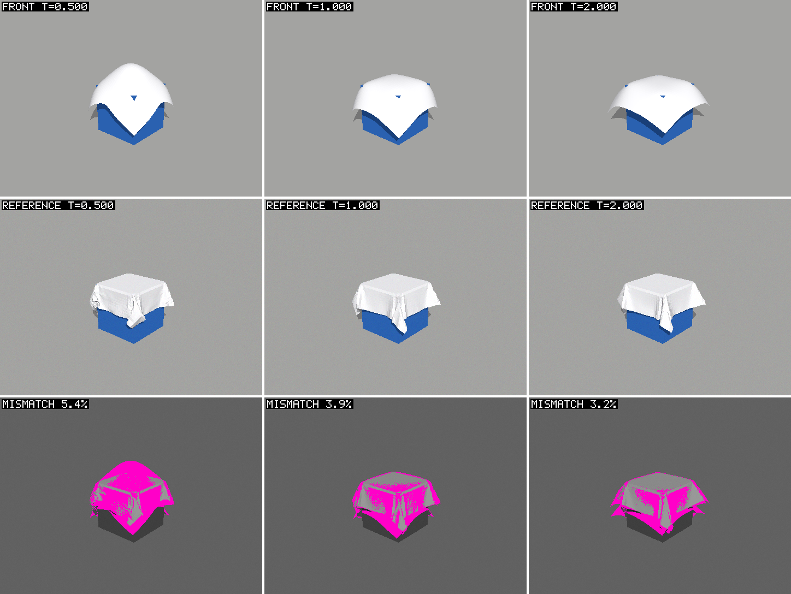
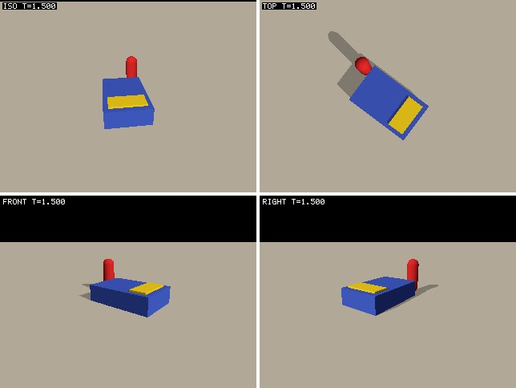
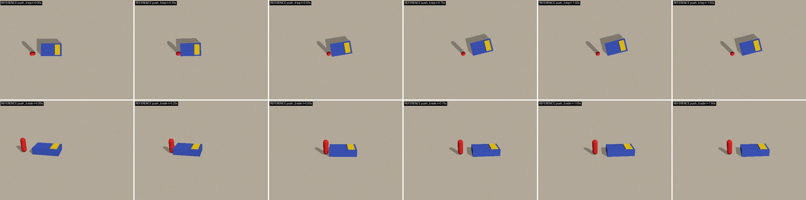
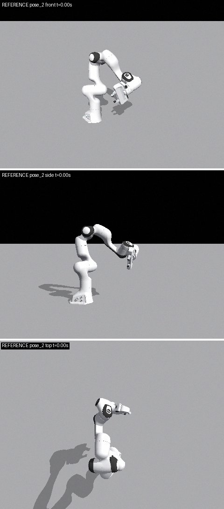

Experimental systems study · third iteration
Calibrating Newton simulations from photographs with a live MCP
Abstract
Can a live connection to a running simulator help frontier coding agents calibrate simulations from photographs? In 36 registered trials, Claude Opus 5.5 and GPT-6 Astra calibrated three Newton scenes (cloth material, a pushed box's friction and hidden load, and a Panda arm's joint offsets) from noisy reference photos, starting from untuned defaults. Success was judged on held-out episodes against hidden ground truth. Each paired trial gave the same agent either Newton's live MCP (with persistent Python, inline images, reference comparison, and filmstrips added in this iteration) or an edit-and-rerun script workflow. With the MCP, agents passed 14 of 18 held-out checks against 12 of 18, used 30% fewer input tokens (paired ratio 0.70, 95% interval 0.60–0.80) and 36% fewer tool calls, and Opus's API cost fell by a third. Elapsed time depended on the agent: Opus finished 20% faster, but Astra took 16% longer. Astra's restart workflow ran optimizers in the background while it reasoned, and every MCP call blocked. An exploratory follow-up added parallel worker sessions to the MCP; with them Astra matched restart speed while using 41% fewer tokens. The live MCP makes calibration consistently cheaper in tokens and calls; it makes it faster when agents work synchronously, or when the session can compute concurrently.
This study is complete; its follow-up, a harness-improvement loop, is the current page. Earlier iterations remain available unchanged: the three-way study with IPython and measured Panda identification and the original two-way study.
1. Question and design
The previous iteration found no consistent advantage for Newton's live MCP. In all 61 of its trials, no agent looked at an image: every task could be solved from numbers, both conditions received ready-made rollout helpers, and restarting a simulation cost only 2–3 seconds. This study asks a narrower, practical question: when a frontier coding agent must calibrate a simulation from photographs, does giving it a live Newton application through MCP make it faster or cheaper than editing parameters and rerunning scripts?
Each registered case runs as a pair. The MCP trial and the edit/restart trial for the same task, model, and replicate start together on the same machine, so they share its background load. The machine was shared with unrelated jobs under a four-CPU quota, which affects absolute times; paired ratios are the primary comparison. Both conditions get the same task module, the same noisy reference photos with calibrated cameras, the same parameter bounds and clean-slate starting values, and the same 30-minute budget. The agent decides when it is done and writes params.json.
The MCP condition does not forbid scripts. Pilot agents in the restart condition ran optimizers in parallel background processes, which a single-threaded live application cannot do, so forbidding scripts would handicap the MCP artificially. The comparison is therefore coding agent plus live MCP against coding agent without it. Two agents were tested: Claude Opus 5.5 in Claude Code and GPT-6 Astra in Codex, both at xhigh effort. Both CLIs were checked to pass MCP image content to the model before any trial.
The registration fixed the source commit, the seeded order of 18 pairs (3 tasks × 2 models × 3 replicates), hashes of every task source and reference photo, and the budget before the first scored agent started. Success is decided only after the agent exits: a fresh process simulates held-out episodes with the submitted parameters and compares them with hidden ground truth under frozen gates. All failures and timeouts are retained.
| Condition | Access | Simulator lifetime |
|---|---|---|
| Newton MCP | Live application through the Newton MCP (execute, observe, filmstrip, describe, rebuild); the agent may also write and run scripts. | One application process for the trial; scripts it writes start their own processes. |
| Edit/restart | Edit params.json or write scripts; sim.py renders the training episodes and writes simulated | reference | mismatch sheets. | A fresh process for every script run. |
2. What changed in the MCP
The pilots and the previous study pointed to specific friction in the MCP, and each change targets one of those points. All of them are generic Newton MCP features, not task-specific code.
Images from Python. show(image, label) inside newton_execute attaches up to eight images to the response. It accepts NumPy arrays, Pillow images, matplotlib figures, PNG paths, and observation results, so an agent can compose a comparison and see it in the same call, without writing a file and opening it in a separate step.
Observations that need no camera math. newton_observe frames the scene automatically from a preset (iso, front, left, right, top). It can tile several views into one image, and it can compare a render with a reference photo taken by the same camera, returning simulated, reference, and mismatch panels plus pixel statistics.
Motion in one image. The new newton_filmstrip tool advances the simulation and returns one labeled grid of frames over time, optionally with reference and mismatch rows (Figure 1).
Less friction in the Python workspace. Rebuilding the scene now keeps the agent's variables and functions, since the old behavior forced agents to reload analysis state after every parameter change. Applications can inject their own objects (here a task controller) and a usage guide, which the MCP server appends to its instructions. Responses dropped default-valued status fields and the per-call workspace inventory; the old responses carried about 1.5 kB of it on every call.
71 MCP unit and SDK tests pass on the frozen commit, including regressions for every new feature, and the log is published. The v2 recovery contract is unchanged: a runtime error in agent Python pauses and invalidates the scene until the agent inspects and acknowledges it or rebuilds.

newton_filmstrip output for untuned default cloth parameters: simulated row, reference photos, and mismatch (magenta: max channel difference above 24/255). One tool call; the image arrives inline.
newton_observe(views=["iso", "top", "front", "right"]) response, auto-framed without any camera parameters. At the registered commit the tool stacked views vertically, and they are arranged 2 × 2 here for display; it now tiles them in a grid itself.3. Calibration tasks from photographs
Each task has a hidden ground-truth parameter set. Reference photos are rendered from the ground truth with Newton's ray-traced sensor camera and receive fixed-seed Gaussian sensor noise (σ = 2.5/255), so a render never matches a photo pixel for pixel. Agents start from generic library defaults and see only photos, camera calibrations, bounds, and the task source. Verification uses held-out episodes with different initial conditions, which they never see.
These references are synthetic. That makes ground truth exact, but it also makes the problem easier than real calibration, because the simulator is the true model of the data. Table 2 lists the gates. The cloth gate is deliberately loose: rerunning the true parameters already differs by about 1 cm mean because folding is nondeterministic, so the gate checks material identification at roughly factor-of-two precision.
| Task | Parameters (clean-slate start) | Evidence given | Held-out gate |
|---|---|---|---|
| Cloth drape (VBD, 1 m cloth, 40×40) | Stretch stiffness, bending stiffness, areal density, friction | 2 drops × 2 cameras × 3 times | Mean particle error ≤ 4 cm, p95 ≤ 20 cm |
| Planar push (MuJoCo, kinematic capsule) | Table friction, pusher friction, COM x, COM y | 2 pushes × 2 cameras × 6 times | Box position ≤ 1.5 cm, yaw ≤ 10° at all times |
| Panda joint offsets (kinematic) | Seven joint zero offsets | 4 poses × 3 cameras | Link position ≤ 3 cm, hand rotation ≤ 4° |


4. Development pilots and what they changed
Twelve development trials (one per task, model, and condition) ran before registration. They are published separately and excluded from the results, and they changed the protocol in five ways.
First, agents read the task source and found a log=False switch that hid their simulations from candidate accounting, so logging is now controlled only by the harness. Second, restart agents ran optimizers in parallel background processes. The Astra restart push pilot spent 55 of its 76 tool calls polling their log files. This led to allowing scripts in the MCP condition and to counting tool calls. Third, Codex intermittently started a session without the MCP tools: 1 of 5 minimal sessions, and 2 consecutive pilot attempts. Marking the server required fixed this in 6 of 6 checks, and the harness still retries any session without the tools as an infrastructure failure, retaining it.
Fourth, the pilots used noise-free references with round ground-truth values, and several agents fitted, rounded, and confirmed a pixel-perfect match, recovering the hidden values exactly. Photographic noise and non-round values now prevent this; the final values differ from the pilot values by at most 7% (offsets by at most 0.004 rad), within the perturbation ranges used to set the gates, and the true values pass and the defaults fail every gate on the regenerated data. Fifth, Astra at xhigh effort needed 17–19 minutes on push, and Codex loses its usage record when killed, so the budget rose from 20 to 30 minutes and timeouts now interrupt before terminating. The development log and all pilot records are published.
5. Registered results
All 36 registered trials ran to completion in the registered order. No MCP trial needed an infrastructure retry, and every reference photo was unchanged after its trial. Held-out verification passed in 14 of 18 MCP trials and 12 of 18 edit/restart trials. Push accounts for most failures in both conditions (Opus failed push in five of six trials). The failing push submissions place the box's center of mass 1–2 cm short along its long axis: they match the training photos to a few millimeters, but the held-out side push depends strongly on that offset. The training photos constrain it only weakly, so this is a property of the task, not the interface.
Cost. With the live MCP, agents used 30% fewer input tokens (paired ratio 0.70, interval 0.60–0.80; lower in 15 of 17 pairs with a usage record), 23% fewer uncached input-plus-output tokens (0.77, 0.66–0.92), and 36% fewer tool calls (0.64, 0.55–0.73; fewer in 16 of 18 pairs). Opus's API cost summed over its nine MCP trials was $4.95, against $7.41 for its nine restart trials. Codex does not report cost.
Time depends on the agent. Across all pairs, elapsed time did not change (0.96, 0.83–1.10). Opus finished 20% faster with MCP (0.80, 0.65–0.96) and used 43% fewer input tokens (0.57, 0.48–0.68, lower in 9 of 9 pairs). Astra took 16% longer with MCP (1.16, 1.05–1.28, slower in 7 of 9 pairs), even though it used 13% fewer input tokens and 44% fewer tool calls.
| Subset | Passes MCP · restart | Time (all) | Time (joint) | Input tokens (all) | Input tokens (joint) | Tool calls (all) |
|---|---|---|---|---|---|---|
| All pairs | 14/18 · 12/18 | 0.96 [0.83, 1.10]; n=18 | 1.02 [0.86, 1.19]; n=12 | 0.70 [0.60, 0.80]; n=17 | 0.67 [0.55, 0.80]; n=12 | 0.64 [0.55, 0.73]; n=18 |
| Opus 5.5 | 6/9 · 5/9 | 0.80 [0.65, 0.96]; n=9 | 0.82 [0.64, 1.01]; n=5 | 0.57 [0.48, 0.68]; n=9 | 0.48 [0.39, 0.57]; n=5 | 0.73 [0.64, 0.83]; n=9 |
| GPT-6 Astra | 8/9 · 7/9 | 1.16 [1.05, 1.28]; n=9 | 1.20 [1.07, 1.34]; n=7 | 0.87 [0.79, 0.96]; n=8 | 0.85 [0.77, 0.94]; n=7 | 0.56 [0.45, 0.71]; n=9 |
| Arm | 6/6 · 6/6 | 1.03 [0.75, 1.33]; n=6 | 1.03 [0.75, 1.33]; n=6 | 0.58 [0.44, 0.76]; n=6 | 0.58 [0.44, 0.76]; n=6 | 0.57 [0.47, 0.67]; n=6 |
| Cloth | 5/6 · 4/6 | 1.02 [0.89, 1.16]; n=6 | 1.01 [0.83, 1.24]; n=4 | 0.70 [0.59, 0.87]; n=5 | 0.73 [0.59, 0.90]; n=4 | 0.57 [0.48, 0.68]; n=6 |
| Push | 3/6 · 2/6 | 0.86 [0.65, 1.03]; n=6 | 1.03 [1.00, 1.07]; n=2 | 0.85 [0.76, 0.94]; n=6 | 0.90 [0.85, 0.94]; n=2 | 0.78 [0.56, 1.02]; n=6 |
All 36 confirmation trials
| Case | Condition | Result | Quality | Time [s] | Input tok | Output tok | Tool calls | Images viewed | Param sets | Sim processes | First pass [s] | Record |
|---|---|---|---|---|---|---|---|---|---|---|---|---|
| Arm · Opus 5.5 · 0 | Newton MCP | Pass | 0.01 | 290 | 341k | 4,817 | 14 | 1 | 697 | 1 | 195 | JSON |
| Arm · Opus 5.5 · 0 | Edit/restart | Pass | 0.18 | 328 | 1.05M | 12,356 | 25 | 3 | 708 | 10 | 231 | JSON |
| Arm · Opus 5.5 · 1 | Newton MCP | Pass | 0.00 | 447 | 319k | 4,467 | 13 | 2 | 857 | 1 | 265 | JSON |
| Arm · Opus 5.5 · 1 | Edit/restart | Pass | 0.01 | 413 | 683k | 8,407 | 20 | 2 | 709 | 6 | 241 | JSON |
| Arm · Opus 5.5 · 2 | Newton MCP | Pass | 0.00 | 382 | 326k | 4,578 | 12 | 2 | 692 | 1 | 261 | JSON |
| Arm · Opus 5.5 · 2 | Edit/restart | Pass | 0.19 | 767 | 660k | 8,294 | 21 | 3 | 1431 | 7 | 295 | JSON |
| Arm · GPT-6 Astra · 0 | Newton MCP | Pass | 0.00 | 492 | 670k | 6,673 | 15 | 2 | 861 | 1 | 167 | JSON |
| Arm · GPT-6 Astra · 0 | Edit/restart | Pass | 0.00 | 320 | 678k | 4,455 | 20 | 0 | 462 | 3 | 197 | JSON |
| Arm · GPT-6 Astra · 1 | Newton MCP | Pass | 0.00 | 458 | 924k | 7,093 | 20 | 1 | 954 | 1 | 187 | JSON |
| Arm · GPT-6 Astra · 1 | Edit/restart | Pass | 0.00 | 392 | 1.34M | 6,940 | 32 | 0 | 594 | 5 | 148 | JSON |
| Arm · GPT-6 Astra · 2 | Newton MCP | Pass | 0.00 | 513 | 720k | 7,180 | 13 | 0 | 544 | 1 | 268 | JSON |
| Arm · GPT-6 Astra · 2 | Edit/restart | Pass | 0.00 | 372 | 977k | 6,614 | 36 | 0 | 516 | 5 | 197 | JSON |
| Cloth · Opus 5.5 · 0 | Newton MCP | Pass | 0.57 | 589 | 600k | 7,270 | 19 | 4 | 25 | 1 | 69 | JSON |
| Cloth · Opus 5.5 · 0 | Edit/restart | Pass | 0.50 | 756 | 1.08M | 11,870 | 27 | 9 | 24 | 5 | 176 | JSON |
| Cloth · Opus 5.5 · 1 | Newton MCP | Fail | 1.07 | 696 | 639k | 8,493 | 20 | 5 | 20 | 1 | 414 | JSON |
| Cloth · Opus 5.5 · 1 | Edit/restart | Fail | 1.05 | 635 | 1.06M | 12,221 | 27 | 6 | 72 | 25 | 381 | JSON |
| Cloth · Opus 5.5 · 2 | Newton MCP | Pass | 0.66 | 602 | 529k | 7,000 | 17 | 5 | 27 | 1 | 71 | JSON |
| Cloth · Opus 5.5 · 2 | Edit/restart | Pass | 0.55 | 593 | 860k | 11,790 | 26 | 4 | 38 | 15 | 263 | JSON |
| Cloth · GPT-6 Astra · 0 | Newton MCP | Pass | 0.55 | 1,770 | 4.06M | 26,565 | 36 | 4 | 81 | 1 | 245 | JSON |
| Cloth · GPT-6 Astra · 0 | Edit/restart | Pass | 0.57 | 1,776 | 5.14M | 22,326 | 80 | 0 | 73 | 12 | 381 | JSON |
| Cloth · GPT-6 Astra · 1 | Newton MCP | Pass | 0.48 | 1,785 | 4.96M | 23,622 | 52 | 3 | 130 | 1 | 640 | JSON |
| Cloth · GPT-6 Astra · 1 | Edit/restart | Pass | 0.60 | 1,344 | 4.86M | 27,322 | 93 | 0 | 49 | 55 | 358 | JSON |
| Cloth · GPT-6 Astra · 2 | Newton MCP | Pass | 0.75 | 1,762 | 3.62M | 18,100 | 34 | 3 | 78 | 1 | 172 | JSON |
| Cloth · GPT-6 Astra · 2 | Edit/restart | Timeout | 0.55 | 1,800 | lost | 0 | 81 | 0 | 69 | 11 | 266 | JSON |
| Push · Opus 5.5 · 0 | Newton MCP | Fail | 5.90 | 427 | 618k | 9,894 | 20 | 2 | 103 | 1 | – | JSON |
| Push · Opus 5.5 · 0 | Edit/restart | Fail | 4.81 | 498 | 723k | 11,285 | 21 | 4 | 2 | 6 | – | JSON |
| Push · Opus 5.5 · 1 | Newton MCP | Fail | 5.75 | 314 | 427k | 6,844 | 15 | 3 | 80 | 1 | – | JSON |
| Push · Opus 5.5 · 1 | Edit/restart | Fail | 5.43 | 709 | 617k | 10,821 | 18 | 4 | 186 | 8 | – | JSON |
| Push · Opus 5.5 · 2 | Newton MCP | Pass | 0.69 | 402 | 638k | 11,494 | 20 | 3 | 4 | 1 | 307 | JSON |
| Push · Opus 5.5 · 2 | Edit/restart | Fail | 5.73 | 446 | 860k | 13,146 | 20 | 3 | 103 | 18 | 422 | JSON |
| Push · GPT-6 Astra · 0 | Newton MCP | Pass | 0.15 | 1,303 | 3.87M | 28,097 | 90 | 4 | 593 | 4 | 457 | JSON |
| Push · GPT-6 Astra · 0 | Edit/restart | Pass | 0.95 | 1,300 | 4.10M | 32,506 | 76 | 0 | 16527 | 22 | 436 | JSON |
| Push · GPT-6 Astra · 1 | Newton MCP | Pass | 0.50 | 1,658 | 4.57M | 31,494 | 48 | 3 | 541 | 1 | 651 | JSON |
| Push · GPT-6 Astra · 1 | Edit/restart | Pass | 0.91 | 1,555 | 5.36M | 41,116 | 125 | 0 | 73525 | 20 | 915 | JSON |
| Push · GPT-6 Astra · 2 | Newton MCP | Fail | 1.49 | 1,452 | 4.46M | 25,429 | 49 | 0 | 317 | 1 | 772 | JSON |
| Push · GPT-6 Astra · 2 | Edit/restart | Fail | 2.59 | 1,350 | 4.32M | 33,143 | 79 | 0 | 879 | 19 | 505 | JSON |
Why Astra did not get faster. Event timestamps split each trial into time inside tools and model time between them. Astra performed the same simulation work in both conditions (median 285 vs 284 simulated seconds, at the same throughput), but its median model time rose from 165 s to 309 s with the MCP. Its restart agents launched optimizers as background processes and kept reasoning, polling logs with many cheap calls (median 79 tool calls, 3.4 s of model time per call). A live-MCP call blocks until the simulation returns, so compute and reasoning alternate instead of overlapping (median 36 calls, 10.5 s of model time per call). Opus used few, synchronous scripts in both conditions and simply benefited from the persistent process and fewer round trips.
Images reached Astra only through the MCP. Astra viewed no images in any of its nine restart trials, even though sim.py wrote comparison sheets, and it received a median of three per MCP trial (mostly filmstrips and newton_observe reference comparisons). Opus looked at images in both conditions, a median of three through MCP and four as files. In almost every trial, though, identification itself was numeric: agents segmented the photos, extracted poses or silhouettes, and fit parameters with SciPy. Images served to orient the search and to confirm a fit. The inline visual tools made that checking cheap enough for Astra to do, but they did not change how parameters were found.
Search progress, independent of stopping. Because agents decided when to stop, every parameter set each agent simulated was scored after the trial against the held-out truth. Up to 40 were scored per trial, and 12 for cloth, where each evaluation is slow, so cloth times are upper bounds. Agents in both conditions reached a passing parameter set in 16 of 18 trials. In the 16 pairs where both did, MCP agents got there first in 9, with a geometric-mean ratio of 0.86 in time to first pass. Six failed submissions, three per condition, had already simulated a passing parameter set before submitting a different one.
One Astra restart trial (cloth, replicate 2) reached the 30-minute limit with parameters that would have passed held-out verification. It counts as a failure, and Codex recorded no usage for it, so Astra's restart token totals are understated by one trial. The ratios exclude pairs without usage.
6. When does the live MCP pay off?
The registered results separate two effects. The first is round trips. A persistent Python session keeps loaded photos, fitting code, and the scene between calls, so agents need fewer calls and resend less context. This is the robust effect: fewer input tokens in 15 of 17 pairs and fewer tool calls in 16 of 18, for both models and all three tasks.
The second is restart cost. It was small here. The task scenes start in 3–5 s. Restart agents started a median of 11.5 simulator processes per trial (range 3–55); 17 of 18 MCP agents used only the live application, and the other also ran three scripts. Simulation compute, not process start-up, dominated tool time. Table 5 lists warm-cache start-up times of stock Newton examples on the same machine. A restart-based workflow pays that cost on every script run, and a live session pays it once. With a 10–20 s scene and ten script runs, the difference is 2–3 minutes per trial before any parameter is fitted. None of the registered tasks is in that regime, so the time results above understate the benefit for heavy scenes rather than demonstrate it.
Third, a live session that blocks during computation serializes computation and reasoning. An agent that works asynchronously, like Astra, loses more to that than it gains from persistence. The MCP change that addresses this is concurrency inside the live session. The workers pool on the follow-up branch runs cells on sibling live applications, synchronously with map or asynchronously with submit. The follow-up below tests it in an exploratory run.
| Scene | Start-up [s] |
|---|---|
| H1 humanoid wearing a jacket (cloth_h1) | 20.8 |
| Hydroelastic nut and bolt (nut_bolt_hydro) | 10.3 |
| Franka folding cloth (cloth_franka) | 8.8 |
| MPM granular (mpm_granular) | 7.8 |
| SDF nut and bolt (nut_bolt_sdf) | 7.3 |
| Hanging cloth (cloth_hanging) | 4.9 |
| This study's tasks | 3–5 |
7. Exploratory follow-up: parallel live workers
After the registered run, the worker pool was added to the MCP (commit 4cf60374) and tested in a separately registered, exploratory run: one pair per task and model, with the live application plus three sibling worker applications against edit/restart, using the same scheduler, budget, and verifier. With four application processes, the MCP condition had the same kind of parallel capacity that restart agents create with background scripts.
Both models used the pool without being asked beyond the application guide: they defined a loss on every worker with workers.broadcast and evaluated candidate batches with workers.map. With workers, Astra's paired time ratio was 0.97, compared with 1.16 in the registered run, and its input-token ratio fell to 0.59 across the two pairs with usage records. Tool calls fell by half. Opus remained faster with the MCP (0.82). The MCP side passed 5 of 6 held-out checks and restart 4 of 6; the two Astra cloth trials both hit the 30-minute limit with parameters that would have passed.
Six pairs run after the main study can only indicate a direction. The follow-up supports the mechanism identified above, that removing serialization lets the persistent session's lower token use carry over into elapsed time, but it does not establish the size of the effect.
| Case | Condition | Result | Quality | Time [s] | Input tok | Tool calls | Sim processes | Record |
|---|---|---|---|---|---|---|---|---|
| Arm · Opus 5.5 | MCP + 3 workers | Pass | 0.00 | 370 | 641k | 20 | 4 | JSON |
| Arm · Opus 5.5 | Edit/restart | Pass | 0.02 | 829 | 403k | 15 | 9 | JSON |
| Arm · GPT-6 Astra | MCP + 3 workers | Pass | 0.00 | 433 | 654k | 19 | 4 | JSON |
| Arm · GPT-6 Astra | Edit/restart | Pass | 0.01 | 509 | 1.05M | 28 | 5 | JSON |
| Cloth · Opus 5.5 | MCP + 3 workers | Pass | 0.64 | 705 | 552k | 18 | 4 | JSON |
| Cloth · Opus 5.5 | Edit/restart | Pass | 0.54 | 649 | 766k | 22 | 14 | JSON |
| Cloth · GPT-6 Astra | MCP + 3 workers | Timeout | 0.57 | 1,813 | lost | 59 | 4 | JSON |
| Cloth · GPT-6 Astra | Edit/restart | Timeout | 0.71 | 1,800 | 7.81M | 104 | 11 | JSON |
| Push · Opus 5.5 | MCP + 3 workers | Pass | 0.39 | 775 | 684k | 20 | 4 | JSON |
| Push · Opus 5.5 | Edit/restart | Fail | 3.45 | 673 | 1.03M | 25 | 8 | JSON |
| Push · GPT-6 Astra | MCP + 3 workers | Pass | 0.40 | 1,656 | 3.82M | 39 | 4 | JSON |
| Push · GPT-6 Astra | Edit/restart | Pass | 0.20 | 1,570 | 6.92M | 120 | 17 | JSON |
8. Limits
References are synthetic renders from the same simulator and renderer, with added noise; real photographs add model mismatch, lighting, and unknown camera error. Three tasks and three replicates per model are small samples of agent behavior; intervals are descriptive, not a population claim. Agents chose when to stop, so cost and quality are not independent; the post-hoc first-pass time measures search progress separately. Wall-clock times include model-service latency and a shared, loaded machine; the pairing controls only the load both members shared. Candidate counts rely on the task module's log; agents were instructed not to bypass it, and transcripts are published for audit, but there is no sandbox.
The MCP condition includes MCP-specific instructions (the application guide and a required first newton_describe), and the restart condition includes a ready sim.py comparison script; both describe equivalent capabilities, but the wording differs. Only one agent CLI per model was tested, and Codex needed an infrastructure workaround.
The follow-up ran after the registered study with one replicate per case; its effect sizes are indicative only.
9. Source and reproduction
Newton source: eric-heiden/newton-live-mcp, registered commit a0297b18599c834a19569b3f9021b63ab9642330; the worker pool and follow-up analysis are on the same branch from 4cf60374 (also on eric-heiden/newton-live-mcp-workers). The MCP lives in newton/_src/mcp (public module newton.mcp). The tasks, live application, restart script template, harness, scheduler, and analysis are in tools/mcp_evaluation/visual, and the live-MCP guide in docs/guide/live_mcp.rst documents every feature.
Published evidence: registration, analysis, per-trial summaries, verification outputs, submitted parameters, prompts, gzip-compressed candidate logs, and event timings under data/v3/confirmation and data/v3/development, full agent event streams in confirmation and development archives (loopback tokens redacted), and SHA-256 manifests. Hidden ground truth is now disclosed in truth.json, and all reference photos are in reference-photos.zip.
To run one trial: python -m tools.mcp_evaluation.visual.run_visual --task push --condition mcp --model opus --workspace /tmp/trial --run (requires the private truth directory for verification). To embed a session in your own application, see the live-MCP guide; tools/mcp_evaluation/visual/app.py is a complete example, including a namespace and guide.